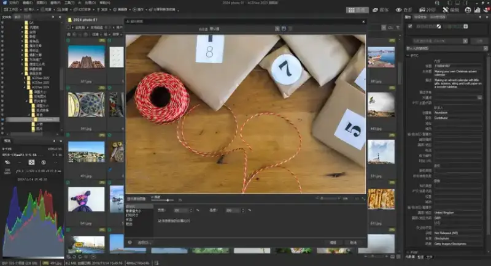
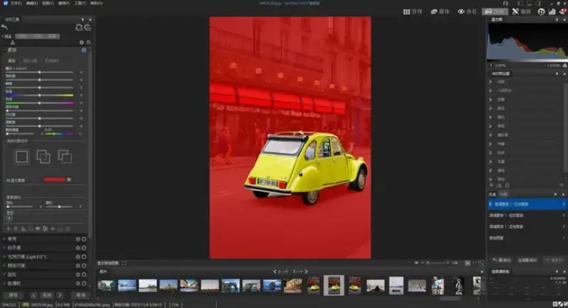
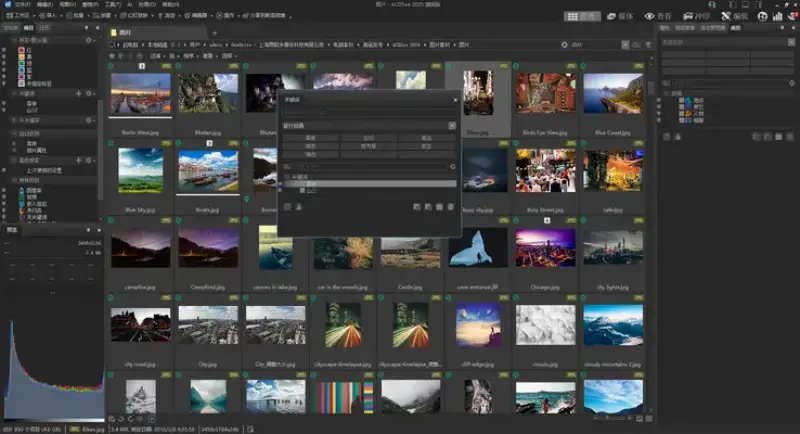

In December 2024, ACDSee 2025 was released. ACDSee Systems is a global company for image management and technical image software. ACDSee 2025 is a professional digital asset management and editing tool. Its release quickly drew wide attention from photography and image editing. The company released three versions: ACDSee 2025 Ultimate, ACDSee 2025 Professional, and ACDSee 2025 Home. It brings a new experience of digital asset management and photo editing to photographers and content creators.
As technology keeps improving, AI will be used more deeply and widely in image software. AI raises the speed and quality of image processing, and it gives users more creative options to fit their own needs. In earlier versions, ACDSee already used AI across the software. What new changes and leaps does the latest 2025 version bring?
AI Super Resolution:
It improves image quality in a smart way. At the same time it reduces noise and blur, removes artifacts, and keeps detail. It raises contrast and clarity to give sharper, more accurate images. AI Super Resolution supports batch processing. You can apply it to many photos at once.

ACDSee Tabs:
You open folders and search results in separate tabs, so you can navigate files and return to them easily. ACDSee Tabs are built to speed up your work. They make digital asset management easier and help you bring all your important files into one workspace.
AI Sky Replacement:
Users praised the AI Sky Replacement feature in the 2024 version. This useful feature expanded fully in the 2025 version. It adds two new categories: overcast sky and fireworks. It also adds 32 new sky preset templates.
New generation of non-destructive AI selection masks:
In Develop mode, explore the redesigned Masking area. It offers strong non-destructive selection tools. They include a new AI object selection tool, color range, and luminance range. You can handle more complex edits with ease.

AI Face Editing:
In the 2025 version, ACDSee speeds up its AI face editing and improves the workflow for portraits. This makes portrait retouching easier. ACDSee AI places 72 ideal points on a face with precision, and you can adjust them by hand. Users can easily change key facial settings such as eyes, eyebrows, nose, mouth, skin, and makeup, and even the face shape.
AI Keywords:
Many users do not know where to start when they organize the huge number of images on their computer. AI Keywords in Manage mode helps users organize images easily. The AI tool adds keywords to each image on its own. Later you search these keywords to find the images you need with little effort.

AI People Mode:
People mode adds an auto-advance feature. Now when you name a face, the cursor moves to the next face after you press Enter. This saves the trouble and time of clicking the next box each time. The number of faces has also been upgraded. It can show up to 9,999 faces with precision.
Beyond these features, ACDSee 2025 also upgraded other useful tools. It adds read and write support for AVIF files. This gives strong compression and high visual quality in a smaller file. It adds support for new camera RAW formats. The total is now more than 700.
Upgrading to the latest ACDSee is simple and fast. Settings from version 2022 and later, such as search history and preset options, import into ACDSee 2025 automatically when it starts. These settings and more can move to the 2025 version right away. This cuts the time users spend on setup.
The release of ACDSee 2025 is a new step in image management and editing. Its strong features and choice of versions meet the needs of different users. From professional photographers to beginners, from management to editing, ACDSee 2025 shows strong ability. It has become a trusted tool for photographers, designers, and content creators. Its AI-driven management and editing features, such as AI Keywords and AI Super Resolution, bring users a new level of image management and editing. At the same time, its improving masking tools, broad file format support, and easy batch processing raise the speed and convenience of digital asset management.
In this digital age, the value of images speaks for itself. With its strong features and drive to innovate, ACDSee 2025 strongly supports us as we record good moments and express creativity. The ACDSee 2025 series is now officially available. People who work in image management and editing can download it from the ACDSee website. It makes complex work simple and raises efficiency. It will give you a good experience.